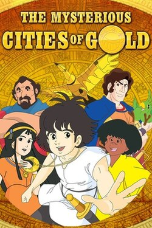

Mysterious Cities of Gold (1982)
Source Card

Photo

Esteban: Child of the Sun , known outside of Japan as the first season of The Mysterious Cities of Gold, is a French-Japanese animated series which was produced by MK, NHK, DiC Audiovisuel, CLT and animated by Studio Pierrot.
External Links
This page aggregates references to the source material behind Name Lore entries.